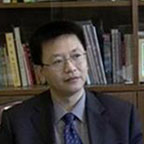

华中师范大学教育信息化技术学院
学院把“立德树人”作为根本任务，始终坚持“以生为本、以师为先”的办学理念， 学院下设教育技术系、数字媒体系、科学教育与传播系，在校学生近1000人。 形成了包括全日制本科生、硕士生和博士生在内的多层次办学格局和人才培养体系。
文科综合实验中心（华中师范大学）
为适应近年来国家文化产业飞速发展及相关人才需求急剧增长的现状， 该校发挥文科和信息技术相关学科综合优势、倾力打造文化产业人才培养基地， 为国家和社会培养急需的人才。培养具有实践能力、研究能力、创新能力的复合型人才。

杨浩 院长
1996年8月于美国佛罗里达国际大学教育学院获博士学位， 1997年9月至今历任纽约州立大学奥斯威戈分校助理教授、副教授、教授；2010年11月至今被聘为华中 师范大学国家数字化学习工程技术研究中心特聘教授、楚天学者，2013年11月起担任华中师范大学教育信息技术学院院长、教授。
杨久民 副院长
1991年6月于华中师范大学获得学士学位；1999年12月获得教育学硕士学位（北京师范大学）； 2014年获得心理学博士学位（华中师范大学）。现为教育信息技术学院副院长、教授，华中师范大学国家级文科综合实验教学示范中心主任， 2013-2017年期间担任教育部教育技术学专业教学指导分委员会秘书长。
左明章 副院长
2008年12月于华中师范大学教育学院获教育学博士学位，2009年6月至今被聘为华中师范大学教育技术学教授、 博士生导师；现任教育信息技术学院副院长、国家级实验教学示范中心“文科综合实验教学示范中心”副主任， 湖北省战略新兴（支柱）产业人才培养计划“数字媒体技术专业建设” 项目负责人。

数字媒体系教师合影
湖北省数字媒体专业建设研讨会暨华中师大数字媒体专业十年巡礼在我校举行。三十多所高校代表和十多家省内外相关企业参参会。副校长彭南生为开幕式致辞。